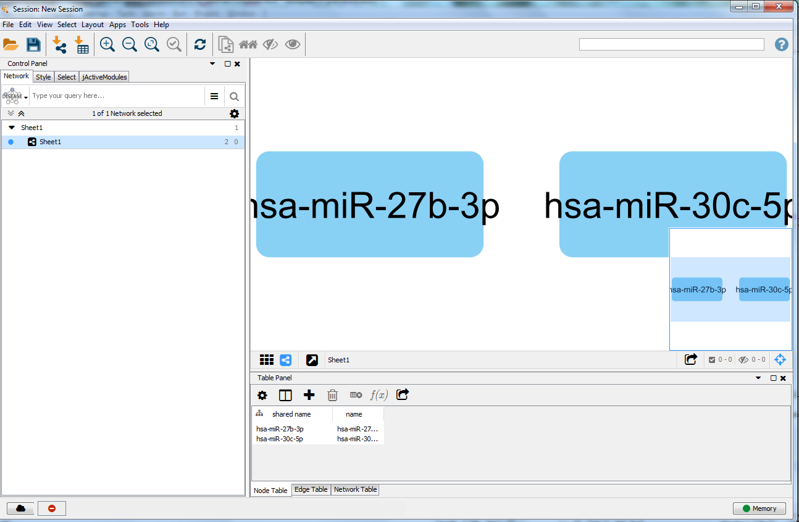

Loading microRNAs
- Start Cytoscape and load the demo session.
- When the network first opens, the entire network is not visible because of the default zoom factor used. To see the whole network, we can use the Fit Content function.
- You should now see the network on the right.

Step 1: Import a set of microRNAs into Cytoscape

- First you will need to create a biological network in Cytoscape containing your microRNAs of interest.
- The datafile should contain at least two columns, (i) the microRNA name and (ii) the corresponding miRBase accession number.
- An example datafile, in which two microRNAs known to be involved in obesity are listed, can be found 'here url=http://projects.bigcat.unimaas.nl/data/cytargetlinker/resources/microRNAs.xlsx'.
- Open the datafile containing the microRNAs in Cytoscape via File -> Import -> Network ->File.
- In the panel you should select a file locally, select the column with microRNA names as the source interaction and transfer the header of the column as attribute names, as shown in Figure 1..
Step 2: Download the microRNA-target gene LinkSet
Step 3: Built regulatory network in Cytoscape
Step 4: Adapt visualization options
The higlight tag
Use the highlight tag to get thisCode snippets
if (files != null) {
for (int i=0; i < files.length; i++) {
String filename = files[i];
}
}